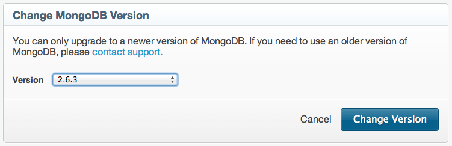
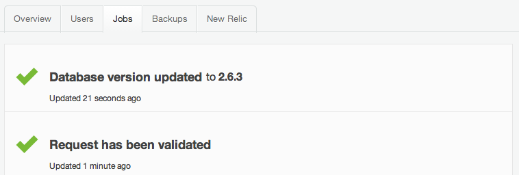

Now available - MongoDB 2.6.3
We’ve just rolled out the latest patch release for MongoDB 2.6, version 2.6.3, so you can now update your 2.6 MongoHQ deployments to the latest version of the database. MongoDB 2.6.3 actually only has two sharding releated fixes in it but it came so soon after the release of 2.6.2 that we thought it simplest to treat the two updates as one.
Version 2.6.2 though contained many fixes including a fix to the query planner which could mistakenly tie query plans with differing performance. Query plans are raced against each other in the planner using the values of the presented query. This selection was found to be overly sticky though, and when another query really demanded a different solution, the older solution and cached indexes were used, potentially leading to heavy scanning of the database. This is one of the many fixes Select the database and on the right hand side of the display you’ll find an entry telling you what version you are running and if an upgrade is available.
{kind=link}
Click on the upgrade link and you’ll be offered the chance to upgrade by selecting the new version from the drop down.
Remember that upgrading will cause a step-down in your Elastic Deployment’s replica set, albeit for a minute or two, so if bear this in mind if you are running in critical production. When the upgrade starts, your view will switch to the database jobs view where you can watch the upgrade take place. Once complete, you’ll see it in the jobs tab too.
If you have any questions about the upgrade process, drop a line to the MongoHQ support team.